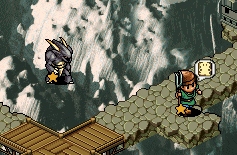
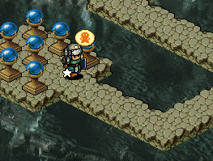
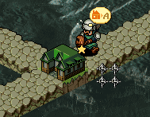
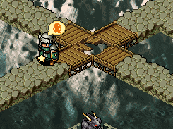
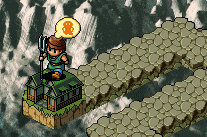
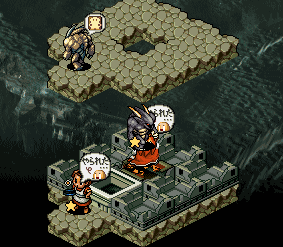

| 概要 | 情報 | ステージ攻略 |
| 地図 | テクニック | モナモナ攻略へ |
|  ゲーム開始前に上の画像でSユニットがいる位置にある時計を取るように指示。  時計をったら、下の水晶を二つ取るように指示。  水晶をったら、Mユニットをこの位置に移動させてから家を建てる。  家を建てたらMユニットの上の画像のように橋を破壊させ、画像の位置に待機させる。但し、時計の効果が有効なうちにすませるようにしてください。  一方、家から生まれたユニットは残された土地に家を建てる。  |
| 概要 | 情報 | ステージ攻略 |
| 地図 | テクニック | モナモナ攻略へ |